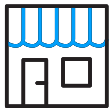
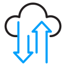
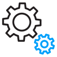
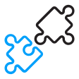

Add-ons unabhängiger Entwicklerinnen und Entwickler, keine offiziellen Produkte der Tungsten Automation. Bereitstellung ohne Gewähr und ohne offiziellen Support. Haftungsausschluss
Veröffentlichte Add-ons
24 Add-ons
Alle Signieren Produktivität Drucken
Konvertieren
SystemStore einmal installieren
Ein kleines Installationsprogramm, danach erscheint das Register „Store“ in Power PDF.
Geprüfte Add-ons auswählen
Jede Version ist signiert und vor der Freigabe auf Lizenzen und Sicherheit geprüft.

Direkt in Power PDF nutzen
Updates kommen von selbst. Ohne Store geht es auch: als ZIP zur manuellen Installation.